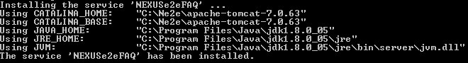
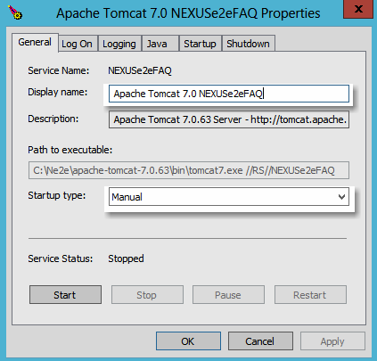
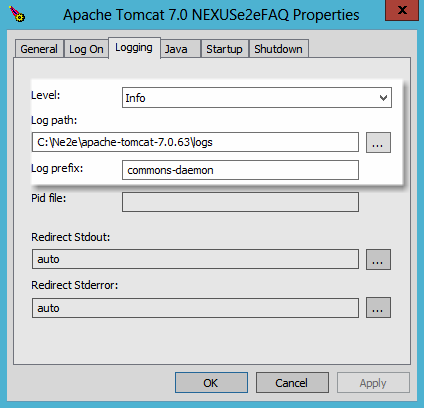
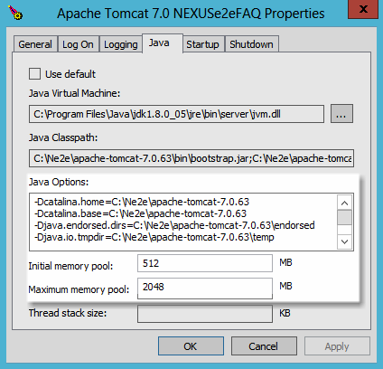

Windows Service
In this article we will show you briefly how to setup and deactivate a Windows Service for NEXUSe2e.
Make sure you have set a JAVA_HOME in your Windows environmental variables.
How to Install the Service
- Open your tomcat\bin folder in a Command Prompt window.
- Install the Service named NEXUSe2eFAQ:
C:\apache-tomcat\bin> service.bat install NEXUSe2eFAQ
(Insert your preferred name instead of NEXUSe2eFAQ)
- If the cmd is not started as administrator you will be asked for permission to execute this process with administration rights.
- After that you should see something similar in your cmd:
- 
- Zoom
{kind=link}
- Next, switch in the bin directory of your Tomcat and rename the "Tomcatw.exe" to wahtever you named your service. Make sure you include the "w.exe".
- Execute your "NEXUSe2eFAQw.exe".
The Service is now fully functional and can be edited further if needed.
Configure Services
- 
- Zoom
{kind=link}
General
You can change the display name to your desire and set the Startup type to automatically.
{kind=link}
- 
- Zoom
{kind=link}
Logging
Set the log level, log path and log prefix for the tomcat instance.
NEXUSe2e log settings are not influenced by these options.
- 
- Zoom
{kind=link}
Java
You can add Java specific parameters into the Java Options, like SSL Debugging.
Set the minmun and maximun amout of memory this Service can use. For NEXUSe2e it is recommended to use from 1024 up to 4092 MB of maximun memory, depending on your workload.
Remove Windows Services
To remove the service, open a Command Prompt window and switch into your tomcat\bin folder.
Execute following command:
C:\apache-tomcat\bin> tomcat7.exe //DS//NEXUSe2eFAQ
(Switch NEXUSe2eFAQ to whatever you named your service)
This should be it, you can check your Windows Services to make sure it is removed.